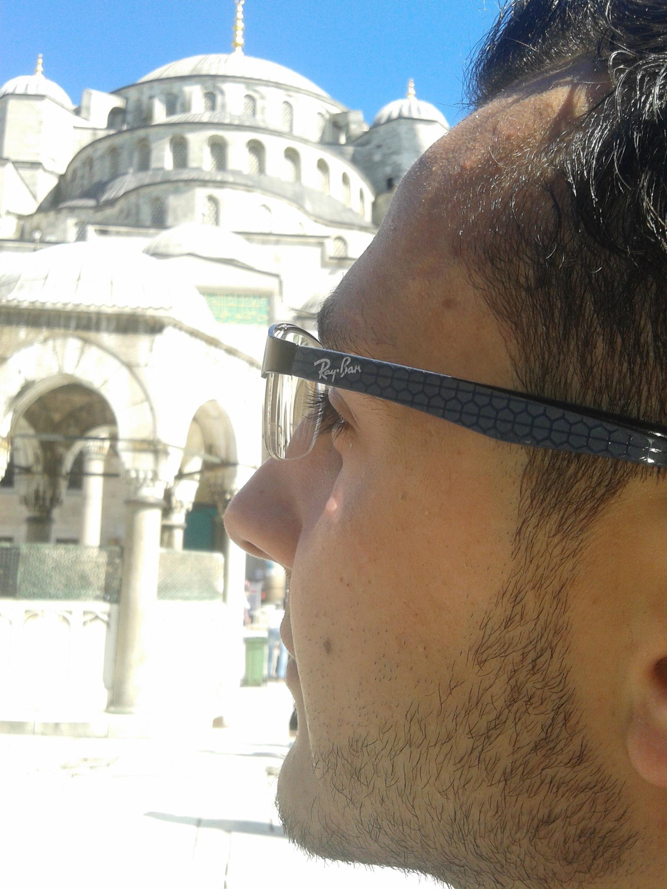

.svg/440px-Jordan_(orthographic_projection).svg.png)



Syria Coders
Full stack web developers & we are 3 guys from Syria and we made this website as Graduation project form Restart Bootcamp coding in Rotterdam ..
TwitterGithubCodePenSyria, officially known as the Syrian Arab Republic, is a country in Western Asia, bordering Lebanon and the Mediterranean Sea to the west, Turkey to the north, Iraq to the east, Jordan to the south, and Israel to the southwest.
Capital: Damascus
President: Bashar al-Assad
Population: 22.85 million (2013) World Bank
Currency: Syrian pound
Official language: Arabic

Education is free and compulsory from ages 6 to 12. Schooling consists of 6 years of primary education followed by a 3-year general or vocational training period and a 3-year academic or vocational program. The second 3-year period of academic training is required for university admission. Total enrollment at post-secondary schools is over 150,000. The literacy rate of Syrians aged 15 and older is 90.7% for males and 82.2% for females.

The most popular sports in Syria are football, basketball, swimming, and tennis. Damascus was home to the fifth and seventh Pan Arab Games. Many popular football teams are based in Damascus, Aleppo, Homs, Latakia, etc. The Abbasiyyin Stadium in Damascus is home to the Syrian national football team. The team enjoyed some success, having qualified for four Asian Cup competitions. The team had its first international on 20 November 1949, losing to Turkey 7–0. The team was ranked 101st in the world by FIFA as of June 2016.

Syria's capital, Damascus, has long been one of the Arab world's centers for cultural and artistic innovation, especially in the field of classical Arab music. Syria has also produced several pan-Arab stars. Asmahan, Farid al-Atrash and singer Lena Chamamyan. The city of Aleppo is known for its muwashshah, a form of Andalous sung poetry popularized by Sabri Moudallal, as well as popular stars like Sabah Fakhri. Also, Syria was one of the earliest centers of Christian hymnody, in a repertory known as Syrian chant, which continues to be the liturgical music of some of the various Syrian Christians.

Syrians have contributed to Arabic literature and have a proud tradition of oral and written poetry. Syrian writers played a crucial role in the nahda or Arab literary and cultural revival of the 19th century. Prominent contemporary Syrian writers include, among others, Adonis, Muhammad Maghout, Haidar Haidar, Ghada al-Samman, Nizar Qabbani and Zakariyya Tamer. From 1918 to 1926, while Syria was under French rule, French Romantic influences inspired Syrian authors, many of whom turned away from the traditional models of Arabic poetry.
including Syrian Arabs, Greeks, Armenians, Assyrians, Kurds, Circassians, Mandeans and Turks.
Religious groups include Sunnis, Christians, Alawites, Druze, Mandeans, Shiites, Salafis, and Yazidis.
Full stack web developers & we are 3 guys from Syria and we made this website as Graduation project form Restart Bootcamp coding in Rotterdam ..
TwitterGithubCodePen